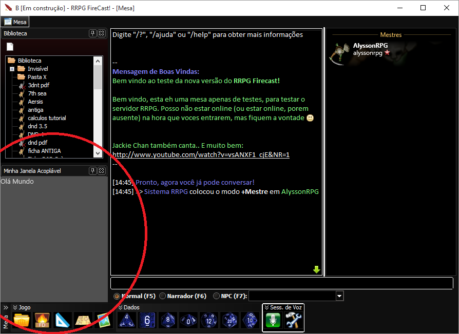

Criar uma janela acoplável de mesa
Criar uma janela acoplável de mesa
Uma janela acoplável de mesa segue os mesmos princípios de um modelo de ficha. A única diferença é que você deve usar "tablesDock" na propriedade "formType" da tag Form.
Exemplo:
| \<?xml version="1.0" encoding="UTF-8"?> \<form name="frmMinhaJanelaAcoplavel" formType="tablesDock" dataType="RRPG.DataTypeUnico.DaMinhaJanelaAcoplavel" title="Minha Janela Acoplável"> \<label text="Olá Mundo"/> ... Outras tags LFM e códigos lua..... \</form> |
|---|
Agora basta compilar seu plug-in que o RRPG fará o resto =)

Como dito anteriormente, janelas acopláveis seguem os mesmos princípios de modelos de fichas e salvam/carregam dados em um NodeDatabase da mesa. A propriedade "dataType" da tag Form serve para informar ao RRPG onde os dados devem ser salvos, e, portanto, uma vez definido, é recomendado que não seja alterado.
Todos da mesa que estiverem com esta janela acoplável aberta lerão e salvarão dados em um único mesmo lugar: As mudanças no NodeDatabase serão sincronizadas com todos da mesa!
Leia também:
Created with the Personal Edition of HelpNDoc: Save time and frustration with HelpNDoc's WinHelp HLP to CHM conversion feature